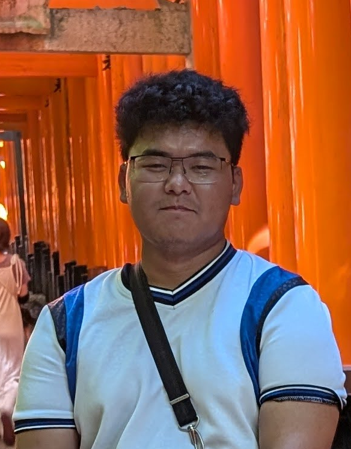

Oakland University, Rochester, MI
Expected Graduation: April 2027
Yuepeng Xiong
(248) 222-1234 | yuepengxiong@oakland.edu |
LinkedIn.com/in/yuepengxiong |
Website
School of Engineering and Computer Science
Oakland University
Rochester, MI 48309
CAREER FOCUS/GOAL: Software Engineer / Game Developer
Focusing on becoming a Software Engineer / Game Developer. Contain basic skills of Java, and still learning the fundumentals. Passionate about learning, problem solving, and teamworking. Seeking any form of backend development in the form of an internship where I can expand my knowlege about how the world works and expand my skillset of problem solving and teamworking.
Education
Bachelor of Science in Computer ScienceOakland University, Rochester, MI
Expected Graduation: April 2027
Computer Science Course Projects:
- Building an Java application that allows users to edit any vertical scrolling rhythm games (VSRGs) song files and being able to convert format from one another. Currently supports .osu and .sm files. Attempting to decode a special format, .vox, a file format from an arcade exclusive rhythm game
Universal VSRG Charter (CSI 2300 Object Oriented Programming)
Current/Past Experiences:
- Self-Taught by understanding the little documentation about how to mod Need for Speed.
- Required learning obscure software like Zmodeler and all open source modding tools.
- Provided extreme problem solving skills by trial and error
- Adapted to new tools as modding tools evolved. Moving from Zmodeler to Blender, and using more simplified methods with newer tools.
- Ability to teach others interested in modding Need for Speed
- Learning how to modifiy engine sounds of cars in Assetto Corsa though trial and error
- Learning how to use FMOD Studio
- Trying to achieve mastery to provide high quality engine sounds for any car modders for Assetto Corsa
Video Game Modding:
Need For Speed Vehicle Modder
Assetto Corsa Audio Modder
- Programming Languages: Java
- Software & Tools: VS Code, Git/GitHub
- Operating Systems: Windows, Linux
Technical Skills:
- Need for Speed Most Wanted: Pepega Mod - A collabarative effort of 9 people (Including a Twitch Streamer) as well as community contributions to create a meme mod for NFS Most Wanted. Provided laughs to many streamers, youtubers and to people who played this. Highest grossing view count on 1 video about this mod reaching nearly 900k views on youtube. https://nfsmods.xyz/mod/2163